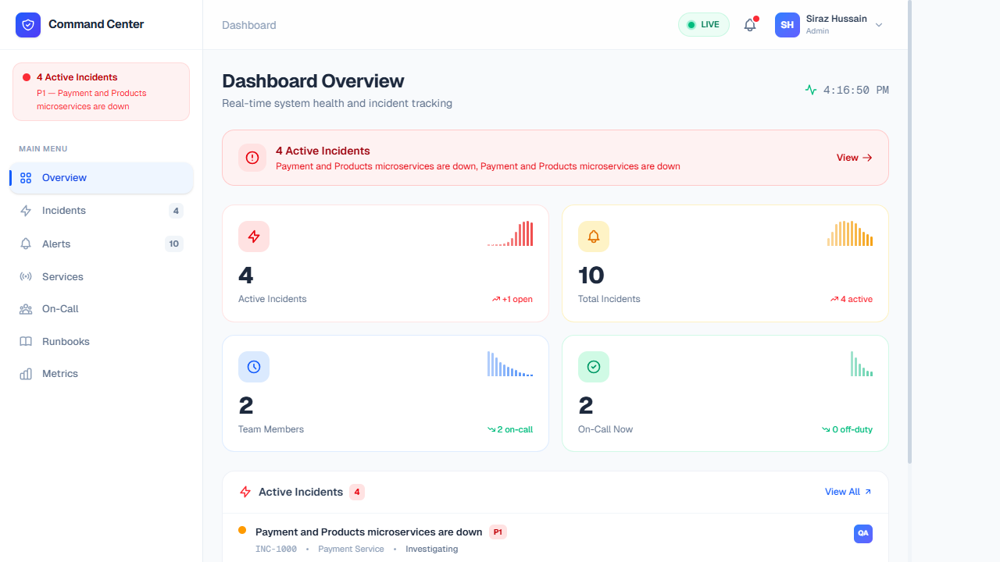
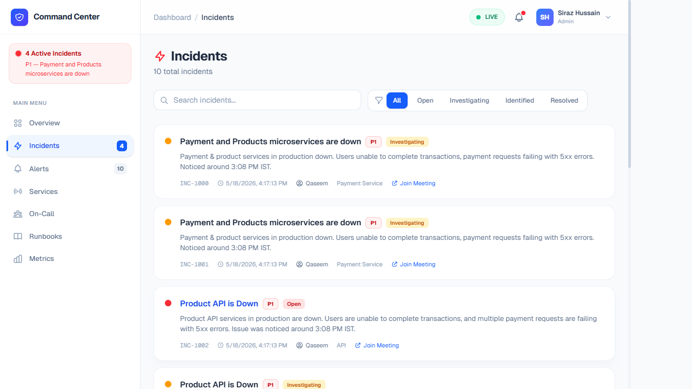
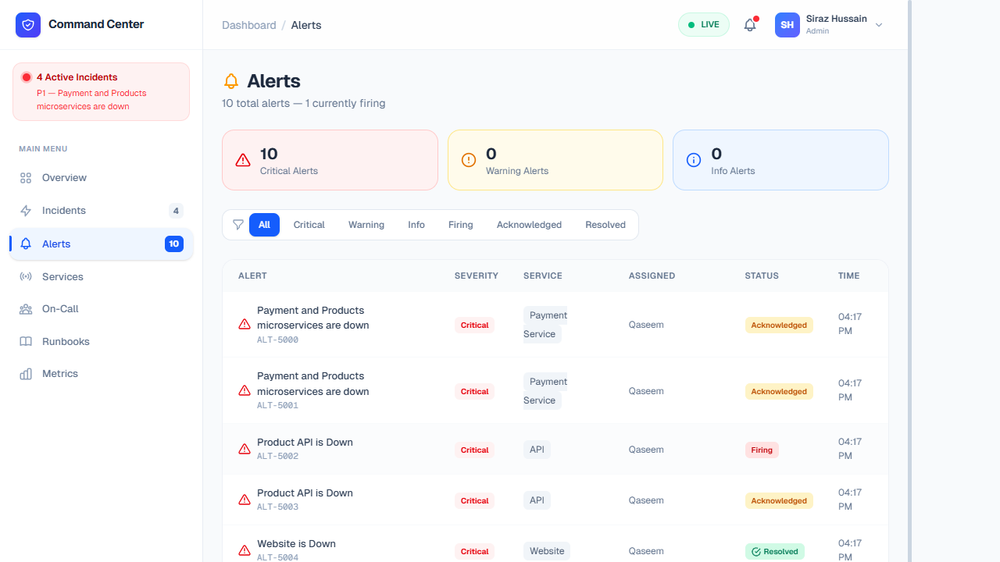
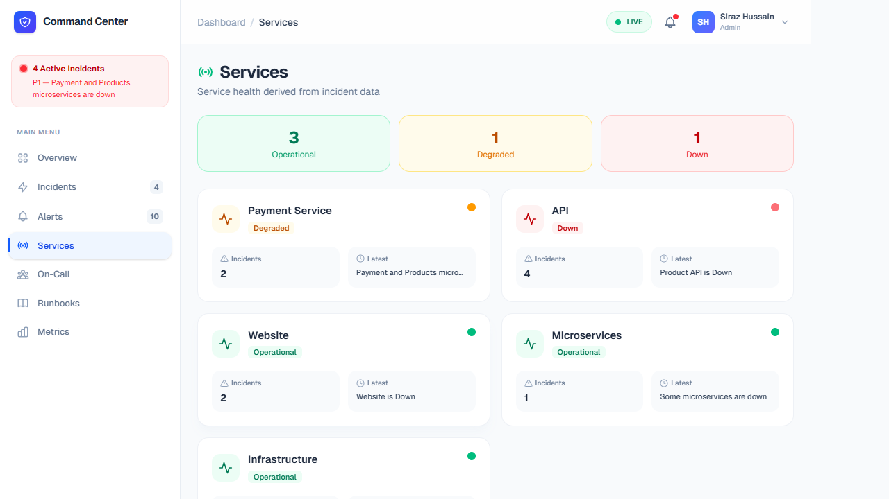
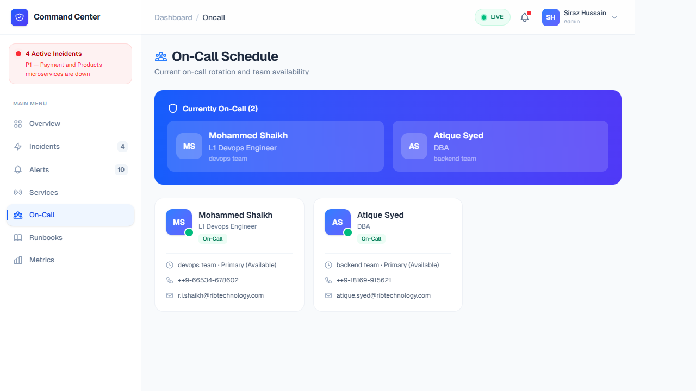
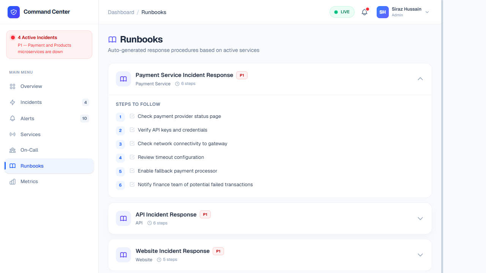
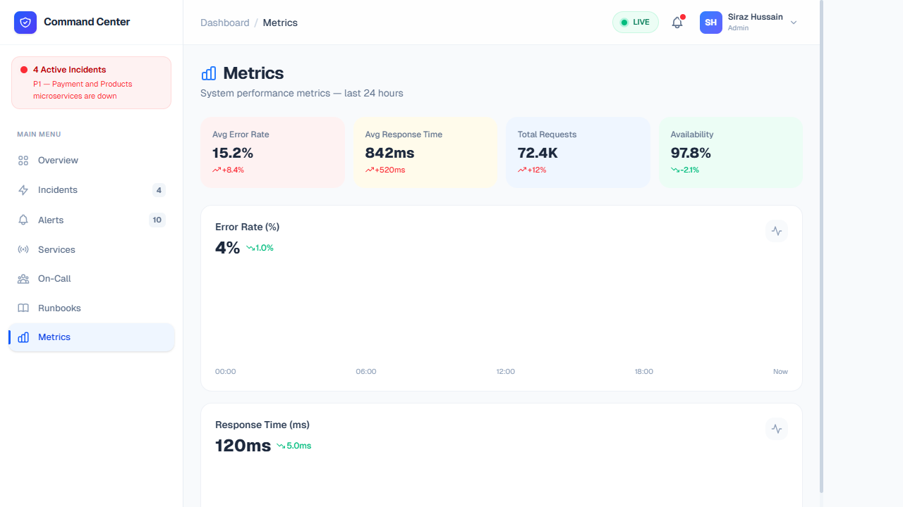

Introduction to Command Center
Your minimalist, high-reliability incident management platform.
Welcome to the Future of Reliability
Command Center is an enterprise-grade incident management platform tailored explicitly for Site Reliability Engineers (SREs), DevOps teams, and platform administrators. In a world where microseconds of downtime equate to significant revenue loss, Command Center provides a unified, distraction-free command interface to observe, manage, and resolve system anomalies efficiently. We believe that during a crisis, your tools should fade into the background—providing only the exact telemetry, insights, and actions you need to stabilize the ship.
Built from the ground up to follow strict minimalist design principles, every pixel inside the Command Center has a strictly utilitarian purpose. There are no distracting elements, arbitrary animations, or convoluted menus. Instead, responders are greeted with a stark, high-contrast, data-dense environment.
Core Operational Capabilities
The platform aggregates the fragmented nature of modern microservices architecture into a centralized hub, giving your team control over the complete incident lifecycle:
- Universal Data Visibility: Consolidates granular system metrics, automated monitoring alerts, and live ticket tracking into a single, cohesive pane of glass.
- Intelligent Alert Triage & Deduplication: Seamlessly ingests overwhelming alert storms from your infrastructure, groups sympathetic failures together, and escalates only the critical thresholds, protecting your engineers from alert fatigue before user-facing customer impact.
- Orchestrated Streamlined Response: Replaces panicky chat messages with structured on-call routing policies. Automatically pages the correct engineer based on explicit service ownership schedules and incident severity parameters (P1 to P4).
- Actionable Service Catalog: Hosts a dynamic service registry that maps upstream and downstream architectural dependencies. When a database cluster begins dropping connections, you instantly see exactly which customer-facing APIs will be affected.
- Executable Runbooks: Bridges the gap between static documentation and live infrastructure. Runbooks are integrated directly into incident alerts, allowing responders to view SOPs and execute vetted fixes with minimal friction, drastically reducing Mean Time to Recovery (MTTR).
- Post-Mortem Analytics: Feeds all metrics, error rates, and resolution times into a rigorous visualization engine. This allows engineering leadership to analyze SLA breaches and improve technical capacity planning for the next sprint.
Security & Enterprise Readiness
Because Command Center sits at the heart of your production environment, it is equipped with stringent enterprise guarantees to ensure robust security postures:
- Role-Based Access Control (RBAC): Strict separation of duties ensuring only authorized responders can execute destructive runbooks or declare global outages.
- Immutable Audit Trails: Every status change, runbook interaction, and alert acknowledgment leaves a permanent timestamped log for compliance and post-incident review scopes.
Getting Started: Use the sidebar navigation menu to dive deep into the specific features, UI components, and workflows of each core module within the Command Center.
Overview Dashboard
The 10,000-foot view of your system's health.

Features & Data Breakdown
The Overview serves as the primary landing page upon authentication, aggregating the most critical data points from across all microservices and team schedules. It is designed to act as a definitive source of truth during ongoing incidents.
- Active Incidents Banner: Immediately warns the user if P1/P2 incidents are ongoing (e.g., Payment or Product service disruptions). This banner is sticky and visible across the top of the dashboard.
- Metrics Summary Cards: High-level tiles that display the total count of Active Incidents, Total Incidents, Team Members (total), and Team Members On-Call right now. Clicking deeply inside any of these cards navigates to their respective detailed views.
- Recent Activity Feed: Shows a chronological feed of the latest incident tickets (like INC-1000) and their current status (Open, Investigating). This allows responders to catch up on the most pressing issues right when they log in.
- Current On-Call Responder Visibility: Instantly check the status of your Site Reliability Engineers (SREs). It lists out personnel such as L1 DevOps Engineers and Database Administrators currently on duty, allowing you to quickly route communications appropriately.
Incidents
Track, manage, and resolve system anomalies.

Features & Data Breakdown
The core of the incident management engine. Here, DevOps and SREs collaborate to resolve downtime, track post-mortems, and ensure full transparency throughout a service outage.
- Ticketing System Alignment: Every incident gets a unique identifier (e.g., INC-1001) for concise communication across Slack, Jira, or email. You can directly integrate this data with ticketing platforms.
- Severity Levels (SLA impact): Incidents are strictly tagged with priority levels (P1 to P4). High severity issues (P1) notify on-call executives and dictate aggressive SLA response times, while P4s might just log warnings for future sprints.
- Actionable Status Workflow: Keep stakeholders informed by progressing tickets through distinct stages: Open → Investigating → Identified → Resolving → Resolved. Every transition adds a timestamped log to the event trace.
- Assigned Responders: Clearly assigns technical leads to the incident, ensuring no double-work is performed and someone has accountability for driving the resolution forward.
Alerts
Proactive monitoring before downtime occurs.

Features & Data Breakdown
Alerts are the precursor to full-scale incidents. Our system continuously polls automated monitors (Datadog, Prometheus, New Relic) via webhooks and surfaces threshold breaches here for triage.
- Automated Threshold Warnings: Flags potential infrastructure strain like 90%+ CPU usage on Kubernetes pods, database connection pool exhaustion, or elevated 5xx error responses from the Nginx proxy.
- Escalation Policies: If an alert isn't acknowledged by an engineer within a predetermined tolerance window (e.g., 5 minutes for Criticals), it automatically escalates into an Incident and triggers pager phone calls.
- Alert Deduplication: Groups similar alerts together to prevent "alert fatigue." If 10 instances of your Payment container fail simultaneously, the system batches it under a single warning instead of spamming on-call responders.
- Acknowledgment & Silencing: Team members can manually "Acknowledge" an alert to signal they are actively looking into it or "Silence" noisy, non-actionable warnings during recognized maintenance windows.
Services Catalog
Microservice health directory and dependencies.

Features & Data Breakdown
This tab provides a structural directory of the entire technical stack. It goes beyond simple listing by mapping dependencies so you can understand which downstream architectures are affected.
- Live Health State: Real-time HTTP checks map Green (Operational), Yellow (Degraded), or Red (Offline) statuses against individual domains (e.g., Auth Service vs. Payment Gateway).
- Service Ownership: Displays exactly which engineering squad or platform team owns the microservice. Includes direct links to their Slack channel or technical lead.
- Dependency Web: Illustrates upstream and downstream consequences. E.g., If the Database service goes down, the UI highlights that the Cart Checkout service is fundamentally blocked.
- Historical Reliability: Contains miniature uptime SLA cards (like "99.98% over 30 days") to help hold respective teams accountable for service deterioration.
On-Call Scheduling
Who is currently responsible for the grid.

Features & Data Breakdown
Clear visibility into the human element of incident response. This module minimizes the chaos of "who do I ping?" during critical outages by consolidating scheduling tools like PagerDuty.
- Live Rotations: Lists exactly who is actively on the primary rotation (Level 1 Responders) and who is acting as the fallback shadow (Level 2).
- Specialized Routing: Tags developers by their specialties. When an incident is clearly Database-related, you can skip the generalist queue and immediately page the specific DBA explicitly listed as on-call.
- Shift Schedules & Handoffs: Displays upcoming shift transitions visually, allowing personnel to coordinate seamless handoffs. Temporary overrides can be entered if someone needs to step away unexpectedly.
- Escalation Tiers: Connects to your directory to map the tree upward (e.g., Engineer -> Team Lead -> Director) so in 30+ minute outages, the appropriate business stakeholders are notified smoothly.
Runbooks
Standard Operating Procedures for known issues.

Features & Data Breakdown
A structured repository of Standard Operating Procedures (SOPs) designed to reduce Mean Time to Recovery (MTTR) by providing executable, verified fixes for recurring infrastructure problems.
- Step-by-step Remediation: Exact CLI strings, bash scripts, and AWS/Kubernetes commands needed to safely flush caches, reboot frozen pods, or migrate RDS clusters without data loss.
- Automated Execution: Advanced runbooks contain one-click webhook triggers that can securely fire commands inside your cluster directly from the dashboard, removing the need for responders to SSH into raw environments.
- Contextual Linking: When an alert triggers, the system automatically suggests the specific runbook tied to that exact alert signature based on historical tag matching.
- Post-Mortem Heritage: Runbooks are organically updated and refined after every major incident review, acting as a living wiki for the organization's technical resilience.
Metrics & Analytics
24-hour performance visualizations.

Features & Data Breakdown
Holistic data visualization allowing managers and engineers to perform deep-dive analysis on the platform's stability over rolling time windows, essential for capacity planning and board reporting.
- Key Performance Indicators (KPIs): High-level readouts tracking Average Error Rate (e.g., 15.2%) alongside Average Latency/Response Time (e.g., 842ms). Visual delta markers show whether these metrics have historically worsened or improved compared to the previous week.
- Load Analytics: Time-series charts map Total Request Volume (72.4K queries). This is crucial for verifying if hardware strain correlates with legitimate high traffic moments or hidden bad code deployments.
- SLA Monitoring: A constant calculation of Overall Global Availability (e.g., 97.8% uptime), tying directly into enterprise customer commitments and refunds.
- Granular Filtering: Allows SREs to filter the timeline (1h, 6h, 24h, 7d) and isolate graphs to specific problematic microservices instead of analyzing the entire monolith at once.